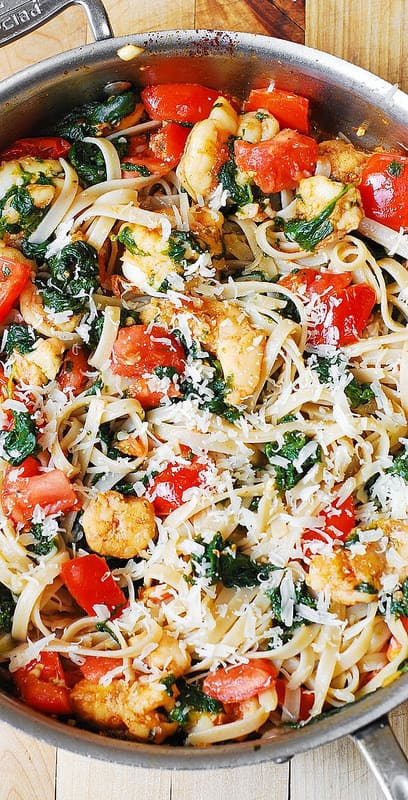

Shrimp Alfredo

Description:
A delicious and easy quick-to-come-together weeknight dinner!
Plump, juicy shrimp perfectly cooked and seasoned, smothered in delicious cheesy alfredo sauce,
and a healthy serving of veggies mixed in to balance the creamy indulgence!
Ingredients:
- Jar of your favorite alfredo (I love Bertolli's Garlic Alfredo!)
- 12 oz thawed or fresh shrimp
- Favorite pasta shape
- Spinach, chopped
- Tomato, diced
- Shredded parmesan (to top)
Directions:
- Start by boiling a pot of salted water for pasta. While that gets going, season shrimp and heat a pan.
- When pan is heated, cook shrimp 2-3 minutes on each side, until firm and opaque pink.
- Remove shrimp, your water should be boiling by now. Cook the pasta to al dente.
- Add diced tomatoes to same pan as shrimp and cook down for 1-2 minutes. Add sauce.
- When sauce starts to bubble, add spinach and stir until cooked down.
- Drain pasta. Combine pasta, shrimp, and sauce. Enjoy!